PCB Analysis Suite
A set of board-level simulation tools that run inside KiCad 10. They read the layout you drew, not a schematic, and answer the questions a schematic cannot: how hot this copper gets, how much voltage the planes lose, what inductance the hot loop of this converter has, what SPICE model this trace is, and whether this matching network survives real part tolerances.
DC & Thermal ready
Current density, IR drop and copper temperature of any nets, with resistors, diodes and loads; short-pulse fusing; magnetic field maps; loop inductance.
Trace R/L/C → SPICE ready
Turns the copper between two or more pads (tracks, vias, pours) into an R-L-C ladder for any SPICE, with Z₀ and delay per segment.
Switching Loop ready
Hot-loop and gate-loop inductance of a buck, boost or half-bridge from its layout, the switching edges in time, a snubber designer, an EMI estimate, before/after comparison.
Matching & Tolerance ready
An RF matching network with real parts: corners, Monte Carlo, worst-case search, yield per band, sensitivity and a BOM.
All tools run in one window process and share the board, its stackup and a component library. A Home window opens them; each saves its setup in a scenario file next to the board, so reopening the board brings everything back.
Install and first run
- KiCad 10 with its API turned on: Preferences → Plugins → Enable KiCad API. Works with native installs and the Flatpak.
- Install the plugin, one of:
kicad_plugin/install.shcopies the plugin into KiCad's plugin folder (run it again after updating the code), orinstall.sh --linklinks it to your checkout, so a code update needs only a restart of the PCB editor;- a release zip:
python3 kicad_plugin/build_pcm.pybuildsdist/kicad-analysis-suite-<version>.zip; install it with Plugin and Content Manager → Install from File…. Use one method, not both.
- Restart the PCB editor. On the first start KiCad creates the plugin's Python environment and installs numpy, scipy, matplotlib, plotly and kicad-python (needs the network, takes a minute). The GUI uses the wxPython that ships with KiCad.
- Two toolbar buttons appear: PCB Analysis Suite (opens Home, with every tool) and DC & Thermal (opens that tool directly).
.kicad_pcb file, not the editor's memory. Save,
and refill zones after editing copper (B in KiCad), before you analyse. DC & Thermal has "Refill zones + save"
and Switching Loop "Save in KiCad, reload and analyse" buttons that do it through the API.Without KiCad: python3 -m pcb_current_sim.wxgui board.kicad_pcb --home opens the same suite on a saved board; python3 -m pcb_current_sim and python3 -m pcb_current_sim.extract are command-line front ends (see Command line).
Concepts shared by all tools
The board is read from the file
Every tool parses the .kicad_pcb itself: tracks and arcs on every copper layer, vias, filled zones (the
fill KiCad saved, so refill first), pads of every shape including custom pads and footprint rotation, drill holes (removed
from the copper), the board outline, and the stackup (copper thickness per layer, dielectric thickness, εr and loss tangent
per ply). Parts are recognised by reference and Value: R… with a value like 4k7 or R005
is a resistor, C… with 10u a capacitor, Q…/U… on a switch node a switch.
Pads, nets and pins
Pads are named REF.NUMBER (U1.3, J2.1). Where a tool needs a part's pin it finds
it by net, not by pin number: all pads of one part on one net are one pin. A power MOSFET's three source pads are one source
node, which is right, since the package joins them; the board current into each pad is still solved separately.
The return net
High-frequency tools (Trace R/L/C, Switching Loop) need to know which copper carries the return current: usually GND. At DC the return is just another conductor; at MHz it flows in the copper right under the signal, and the gap between the two sets the inductance. This is why the same trace can be 0.4 nH/mm over a solid plane and 1 nH/mm on a two-layer board without one.
Scenario file
Each tool saves its setup in <board>.current_sim.json next to the board, in its own section
(stackup, dc, extract, loop, matching). A tool rewrites only its
section. Commit this file with the project if you want colleagues to open the same analyses.
Shared panels and KiCad link
- Stackup & materials: copper thickness overrides (finished outer copper is often 45–60 µm, not 35) and εr/tanδ against frequency. Every tool reads it.
- Component library: real capacitors, inductors and resistors (tolerance, ESR/ESL, SRF, Q, DC-bias derating), used by Matching and Switching Loop.
- Highlight in KiCad: clicking parts in a tool's list selects their footprints in the PCB editor (Suite menu to switch it off). Most tools also take pads from the current KiCad selection.
- Tooltips: every input field in every window explains itself on hover.
DC & Thermal
Feed currents and voltages into the copper of a real layout and see where the current goes, how much voltage is lost on the way, which piece of copper gets hot, how long a track survives a short-circuit pulse, and the magnetic field the currents make.
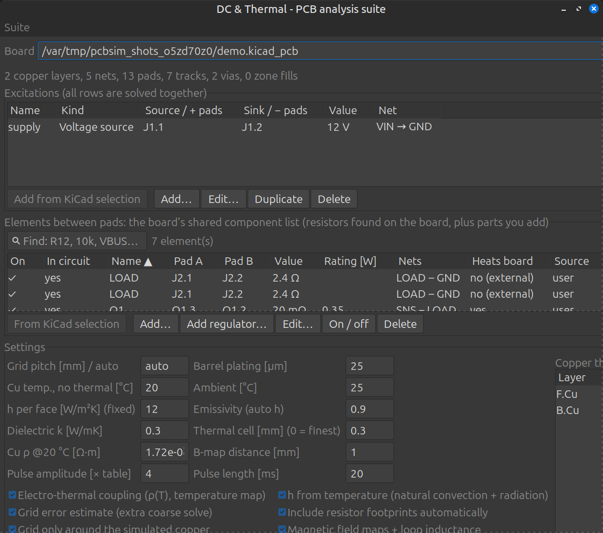
How it works
- Geometry to a grid. Each copper layer of the nets you excite is cut into square cells (pitch chosen automatically, typically 30–100 µm, or set by hand). A link between two cells conducts through the copper part of their shared face (a cut-cell finite-volume scheme, sampled 4×4 per face), so a 45° track and an axis-aligned one of the same width give the same resistance (within 1–2 %). Vias and plated holes are resistors between layers, R = ρL / (π·t·(d + t)) with the plating thickness t. Drill holes are removed.
- Excitations. Every row is applied at the same time: a current path (I in at the source pads, out at the sink pads), a load (draws I between its + and − pads, like an IC or a motor), a voltage source (holds a voltage between its pads, like a regulator; a Norton source with 10⁶ S). Pads on one side of a row are one equipotential; a through-hole pad is fed through its barrel on every layer, an SMD pad over its area.
- Elements. Resistor footprints are found from their Value (
4k7,0R1,R005) and become lumped resistors between their pads, so current flows through a shunt or a series resistor into the next net. You can add any two-pad element by hand: a FET's RDS(on), an inductor's DCR, a fuse, an off-board wire, or a diode (constant drop Vf plus R, conducting one way; the solver iterates the on/off states). - Regulators. A linear or switching regulator joins three pads (IN, OUT, GND). OUT − GND is held at the output voltage by a stiff source at the regulator's pins; the input current is drawn from IN: the output current plus IQ for a linear regulator, Pout/(η Vin) for a switching one. Since that current depends on the solution, each solve adds one extra right-hand side per regulator to the same factorisation and settles the input currents on that small system. An LDO whose headroom falls below its dropout becomes a fixed drop instead. Its loss VinIin − VoutIout heats its pads.
- Solve. Kirchhoff's law at every cell gives a sparse symmetric system, solved directly (SuperLU, or PARDISO if installed). Current density J and the loss density ρJ² follow per cell.
- Heat. Each copper layer is a thermal sheet (all copper of all nets plus its share of the dielectric), the sheets are coupled through the dielectric and through every via barrel, and both outer faces lose heat to the air: natural convection 1.42·(ΔT/L)0.25 plus radiation, from the local temperature (about 11 W/m²K at a 10 K rise, 18 at 100 K). Element I²R and "Heat at parts" are spread over their pads.
- Electro-thermal loop. Copper resistance rises 0.39 %/K, so hot copper carries current worse and heats more. The tool re-solves with ρ(T) until the temperature changes by less than 0.5 K, and stops with a thermal runaway flag if the copper would melt.
- Extras. A second solve at twice the pitch gives a ± error estimate per row. Biot–Savart from the solved currents gives the magnetic field 1 mm above and below the board. Driving each row alone gives its loop inductance (partial inductance of the DC current pattern, closed by a straight line between its pads).
- Pulse. Optionally a rectangular pulse (all rows × a factor, for a time) is integrated in time with the copper's and the reachable FR4's heat capacity: the hottest point against time and the time to melt.
Using it
- Board. Opens with the board KiCad has open. "Refill zones + save" makes sure the file is current.
- Rows. "Add…" a row (kind, + pads, − pads, amps or volts, a name), or select pads in KiCad (source first, then sink) and "Add from KiCad selection". Use KiCad's selection filter to pick pads, not footprints. Several pads on one side join with
+. - Elements. Check the detected resistors (value, power rating guessed from the package); add elements for FETs, inductors, fuses, diodes, external loads (untick "heats the board" for off-board parts).
- Regulators ("Add regulator…"): linear or switching, its IN / OUT / GND pads, output voltage, IQ, the dropout (linear) or efficiency (switching), and ΨJB for a junction estimate. Feed its input with a voltage-source row, put loads on its output.
- Settings. Thermal on, ambient, h from temperature (default) or fixed, copper thickness overrides (finished copper), thermal cell size, error estimate, magnetic maps, pulse, "Heat at parts…".
- Run simulation and read the results window: the map in the middle (layer and quantity in the bar above it: |J|, V, T, power density, |B|, B normal, T at the end of the pulse); the values at the pointer in a large box on the map; click to set a ΔV reference; the sidebar on the left has the exports and the summary and tables (select a table row to mark it on the map). Tabs above the map: 2D map and an interactive 3D view.
- Tables: excitations (ΔV, Reff), pads, vias (current, share in parallel groups, IPC capacity), elements (I, V, P against rating, pad temperature), inductance (L, M, k), pulse, and a loss ranking per copper item: power, share, crowding factor, IPC-2221 use and Onderdonk fusing time.
- Export: PNG/SVG/PDF of the view, every layer, a multi-page PDF report, CSV tables, an interactive HTML page, ParaView (VTK) and the result itself (
.npz) to reopen later.
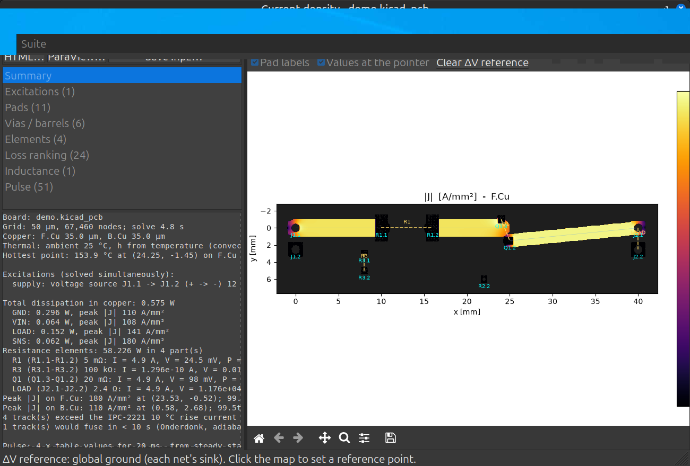
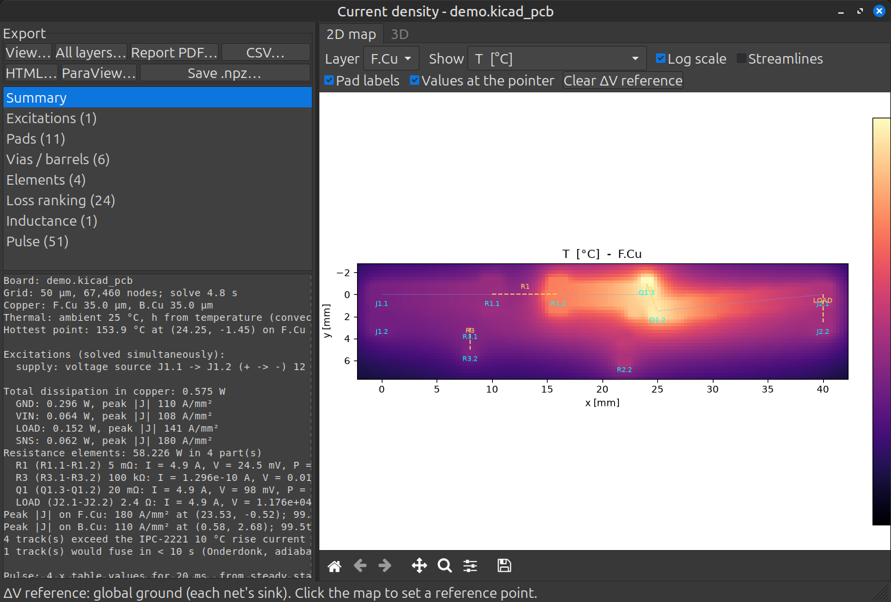
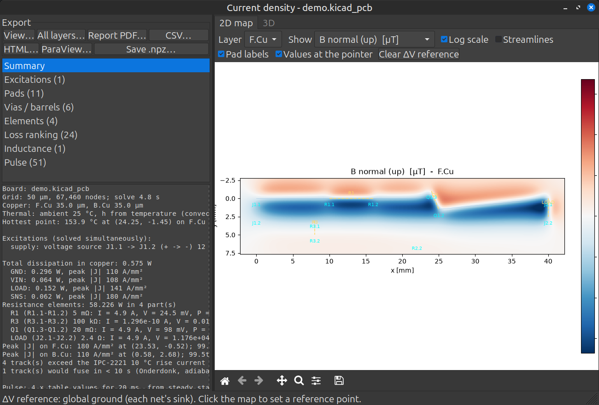
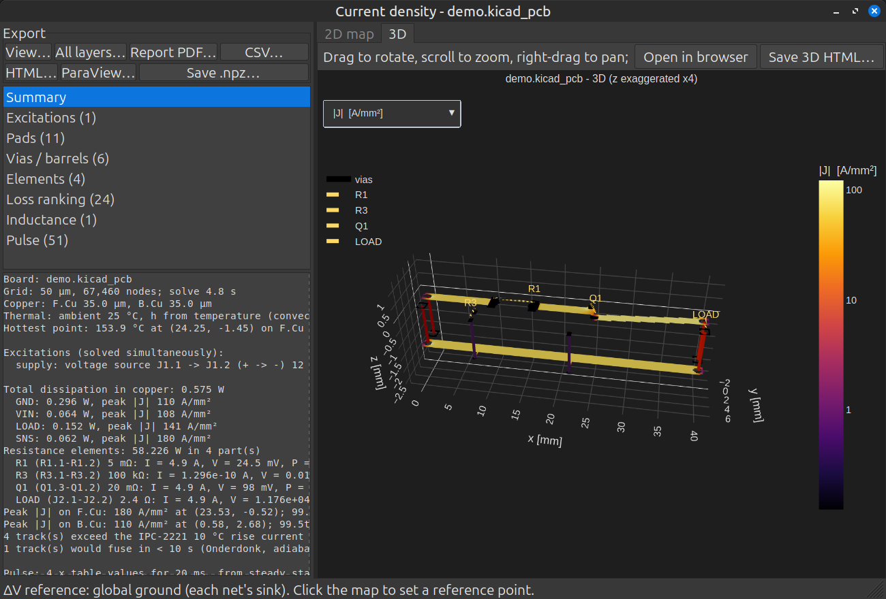
Trace calculator (the one-line estimate the tool replaces)
For a single straight track the classic estimates are IPC-2221's curve fit for the temperature rise and Onderdonk's equation for fusing. The tool lists both per copper item for reference. Try a track here, then read why the layout solve differs.
Limits
- DC only. No skin effect, no AC current redistribution. For a switching converter's ripple current, the DC map shows where the average current flows, not where the 1 MHz ripple returns (use Switching Loop for that).
- 2.5D heat. Each layer is a sheet; heat flow through the thickness is lumped. Component bodies, their junction-to-case resistance, enclosures, forced airflow and nearby hot boards are not modelled. "Heat at parts" puts a part's watts on its pads: it gives the board temperature under the part, not the junction temperature.
- Regulators are DC black boxes. Output held at its pins, input current from the power balance; no regulation loop, soft start, current limit or thermal shutdown, and the efficiency is one number (take it from the datasheet curve at your load). The junction estimate uses ΨJB with the solved board temperature.
- Isolated board in still air. Both faces see ambient. A board bolted to a chassis or in a closed box runs cooler or hotter; adjust h by hand ("h from temperature" off) to represent it.
- Current excitations are ideal. A current row pushes its amps whatever the resistance; use voltage sources and loads where the supply and the load decide the current. Two loops excited by separate current rows have no defined voltage between them, so an element bridging them carries no current.
- Resistors have no temperature coefficient; Kelvin (4-terminal) shunts need their pads chosen by hand.
- Loop inductance uses the DC current pattern: at MHz the return current hugs its track and the real L is somewhat lower.
- Pulse: rectangular only, the solder and the parts' heat capacity are ignored (errs hot).
Use cases
1. A 15 A motor-driver feed on a two-layer board
Hardware engineer, brushed-DC motor controller, 12 V, 2-layer 1 oz FR4, no fan.
- Situation
- The supply enters through a screw terminal J1, runs 60 mm to the H-bridge FETs, and has to squeeze to 1.8 mm between two mounting holes. IPC-2221 gives a 1.8 mm 1 oz outer track a rise of over 200 K at 15 A (try it in the calculator), and the board sits next to the motor at 50 °C. Is it really that bad, and is widening the neck enough or does it need copper on the bottom too?
- Why this tool
- The answer depends on what the calculator ignores: the pours on either side of the neck, the GND return running under it on the bottom layer (which conducts heat too), the FETs' own losses, and that the narrow part is only 4 mm long. The solve sees all of it and also shows whether the current crowds at the terminal pads.
- Steps
- Save and refill zones in KiCad, open DC & Thermal.
- Add a current path row "VM": source
J1.1, sink the high-side FET drains (select their drain pads in KiCad, "Add from KiCad selection"), 15 A. Add a second row "GND return" from the low-side sources back toJ1.2, 15 A, so both copper paths carry the current at once. - If the motor current sense resistor is on the board it is detected automatically; check its value and rating in the Elements list.
- Settings: ambient 50 °C, thermal on, h from temperature. Add the FETs' conduction loss under "Heat at parts…" (for example
Q1 0.6,Q2 0.6) or take them from the Switching Loop tool. - Run. Look at T on F.Cu, then the loss ranking table: the neck should be at the top with its crowding factor and IPC use.
- Try the fix in KiCad (widen, or add a bottom-layer copper strip under the neck with a row of vias at each end), "Refill zones + save", run again, compare Tmax and the row's ΔV.
- What to look for
- Tmax and where it is; whether the hot spot is the neck or the terminal pads (screw terminals often run hotter than the track because current enters through a small barrel); the ΔV of each row (motor voltage lost on the board); the via table if you add the bottom strip: whether the vias share the current or the first one carries most.
- Caveat
- The screw terminal's own contact resistance and the wire are not on the board: add them as an element with "heats the board" off if you want their drop in ΔV.
2. A current-sense shunt that reads wrong and runs hot
BMS / power-supply designer, 2512 5 mΩ shunt, 20 A continuous.
- Situation
- The shunt dissipates I²R = 2 W. Prototypes read 3 % high, and the shunt's pads are close to 110 °C. Two questions: where must the sense traces leave the pads (Kelvin taps), and how much copper does the shunt need to stay under the 2512 part's derating point?
- Why this tool
- With 5 mΩ, 1 mΩ of pad and solder copper in the measured path is a 20 % error source; the error depends on exactly where on the pad the sense trace leaves. The tool solves the voltage across the pads themselves (the voltage map shows the gradient inside each pad), and it heats the pads with the shunt's I²R, spread over their area.
- Steps
- Add a current path row from the battery connector pads to the load connector pads, 20 A. The shunt (for example
R1, ValueR005or5m) is detected and the path runs through it. - Run with thermal on. Read the shunt's row in the Elements table: I, P = 2 W, rating use (2512 ≈ 1 W guessed: it will be flagged; correct the rating to the datasheet's 3 W) and pad temperature.
- Switch the viewer to V on the shunt's layer. Click one sense pad's tap point to set the ΔV reference, hover the other tap: that is what the ADC sees. Compare with 20 A × 5 mΩ = 100 mV.
- Move the taps in KiCad to where the readout equals 100 mV (usually the inner edge of the pads), and enlarge the pours to bring the pad temperature down; run again.
- Add a current path row from the battery connector pads to the load connector pads, 20 A. The shunt (for example
- What to look for
- ΔV between the actual tap points vs. the ideal 100 mV; pad temperature vs. the shunt's derating curve (most 2512 metal shunts derate from 70–100 °C terminal temperature).
- Caveat
- The shunt is a lumped resistor between its pad electrodes: current spreading inside the resistor body and its TCR are not modelled. The tap error from the copper is what the tool gives you.
3. IR drop on an FPGA core rail
Digital board designer, 0.85 V core rail, 12 A, ±3 % tolerance at the balls, 8-layer board.
- Situation
- The point-of-load regulator sits 35 mm from the FPGA (the area under it is full). The rail runs in an inner plane perforated by the BGA's via field. The FPGA allows ±25 mV in total, regulator tolerance included. How much does the plane eat, and is remote sense needed?
- Why this tool
- A perforated plane under a BGA has an effective resistance far above its sheet value: the anti-pads around every via cut it into narrow webs. Only a field solve of the real geometry gives the drop; the voltage map also shows which balls see the lowest voltage.
- Steps
- Add a voltage source row at the regulator's output capacitor pads (+ on VCCINT, − on GND), 0.85 V.
- Add a load row: + the FPGA's VCCINT balls (select them in KiCad with the selection filter set to pads), − its GND balls, 12 A.
- Thermal can stay on (the loss is small); turn on the error estimate.
- Run. The load row shows the voltage the FPGA actually gets. On the plane's layer, the V map shows the drop pattern; hover the worst ball.
- Try more vias from the regulator to the plane, a second plane layer in parallel, or the sense point moved to the BGA; compare.
- What to look for
- The load row's voltage against 0.85 V − 25 mV, with the error estimate's ± band; vias near the regulator carrying most of the current in the via table.
- Caveat
- This is the DC part of the budget. The transient part (load steps, decoupling) is an AC question for the planned PDN tool.
4. Will a track survive the short-circuit current until the protection trips?
Battery-pack designer, 4S Li-ion, protection MOSFETs opening after 200 µs to 5 ms depending on the fault.
- Situation
- A hard short can draw 150 A from the cells for the protection IC's delay, up to 5 ms in its slowest setting. The pack board has a 3 mm, 2 oz track from the cell tab to the FETs. Will it fuse, or get hot enough to delaminate, before the FETs open?
- Why this tool
- Onderdonk's equation assumes a bare wire with no heat escaping. On a board the FR4 under the track soaks up heat within milliseconds, and pads and pours at its ends add copper. The pulse simulation includes both and gives the hottest point against time.
- Steps
- Add the current path row (cell tab pad → FET drains) at the normal current, say 20 A, and the return row.
- Settings: Pulse on, amplitude 7.5 × (= 150 A), length 5 ms, "from steady state" on (the board is warm from the 20 A when the short happens).
- Run. The pulse table gives the peak temperature over time and the time to melt if it melts; the viewer's "T at end of pulse" shows where.
- Compare with the loss ranking's Onderdonk column (bare-wire fusing time at the row current) and the protection delay.
- What to look for
- Peak copper temperature at 5 ms. Copper does not need to melt to fail: above about 200–250 °C solder joints reflow and FR4 starts to delaminate, so keep a margin well below 1083 °C.
- Caveat
- The cells' internal resistance and the FETs set the real short current; enter what your protection design expects. The parts' and solder's heat capacity is not included (errs hot).
5. A magnetometer next to a power track
Drone flight-controller designer, 3-axis magnetometer, 25 A ESC feed on the same board.
- Situation
- The compass heading drifts with throttle. The battery feed passes 8 mm from the magnetometer. The Earth's field is about 50 µT, and a 1° heading error is about 1 µT of disturbance in the horizontal plane.
- Why this tool
- The field depends on where the current and its return flow, on every layer. The tool computes B from the solved currents (Biot–Savart), so it shows the field at the sensor for the real routing, and how much routing the return directly under the feed cancels it.
- Steps
- Add the feed and its return as current rows at 25 A (or the hover current).
- Settings: Magnetic on, "B-map distance" = the height of the sensor's die above the top surface (about 0.5–1 mm).
- Run, choose |B| or B normal on the top view, hover the magnetometer's position: Bx, By, Bz in the readout.
- Reroute the return directly beneath the feed (or twist the pair as close tracks), run again and compare the field at the sensor.
- What to look for
- The horizontal components at the sensor in µT, against your heading-error budget (about 1 µT per degree). A field that scales with throttle cannot be calibrated out by a hard-iron calibration.
- Caveat
- Only the board's currents: the battery leads and motor wires are often the bigger source, and they are off the board.
6. How many vias for a layer change at 10 A?
Any power layout that changes layer: an LED driver's output, a converter's input.
- Situation
- A rule of thumb says 1 A per 0.3 mm via. Ten vias in a 2×5 grid should do for 10 A. But the current enters from one side: do the far vias do anything?
- Why this tool
- The via table lists each via's current and its share of its parallel group. Vias on the side the current comes from carry more, because the path through the far ones is longer in copper.
- Steps
- Add the current path across the transition; run; open the via table and sort by current; look at the share column and the IPC capacity per via. Try a staggered pattern or a wider entry, compare.
- What to look for
- The hottest via's current against its capacity, and whether moving vias to the entry side is better than adding more.
7. How much copper does a SMD power MOSFET need?
Power designer, D2PAK / PowerPAK FETs without heatsink, 1.5 W each.
- Situation
- The FET datasheet's RθJA is measured on a 1 in² 2 oz pad. Your layout has less copper, but has thermal vias to an inner GND plane. What is the board temperature under the tab?
- Why this tool
- The board's spreading resistance is the dominant part of RθJA for SMD power parts, and it depends on the copper around, the vias and the planes: what the thermal model solves.
- Steps
- Add the FETs' load path as rows (their I²R in the copper is included) or, if only the heat matters, a small row so the nets are simulated.
- "Heat at parts…":
Q1 1.5 conduction + switching(or "Send losses to DC & Thermal" from Switching Loop). - Run; T on the FET's layer and the pad temperature. Add thermal vias / copper; compare.
- Junction temperature ≈ the pad temperature + P × RθJC from the datasheet.
- Caveat
- The heat enters through the pads; the part's own body and its junction-to-case resistance are not modelled.
8. Can the LDO take it, or does it need to be a switcher?
Embedded designer, 12 V input, a 3.3 V LDO in SOT-223 feeding an MCU (80 mA) and a radio (70 mA average).
- Situation
- The LDO drops 8.7 V at 150 mA: about 1.3 W in a small package. The datasheet's θJA of 60 °C/W says the junction would sit 80 K above ambient, but that figure is for a JEDEC test board, not this one, which has a modest pour on the tab and a GND plane below. Is the copper enough, or should it be a buck converter?
- Why this tool
- The regulator's loss follows from the voltages and currents the board actually delivers, its heat goes into the real copper around its tab, and ΨJB turns the solved board temperature into a junction estimate. Swapping it for a switching regulator is one click.
- Steps
- Rows: a voltage source, 12 V, at the input connector; loads on the 3.3 V net at the MCU's and the radio's supply pins (0.08 A and 0.07 A).
- "Add regulator…": linear, IN / OUT / GND = the LDO's pins, 3.3 V, IQ from the datasheet, its dropout at 150 mA, ΨJB from its thermal table, Tj max 125 °C.
- Settings: ambient at the product's worst case (for example 50 °C), thermal on. Run.
- Regulators tab: P, the pad temperature and Tj. Enlarge the tab's pour or add thermal vias to the plane in KiCad, reload, run again.
- Edit the regulator to "switching" with the efficiency from a candidate buck's datasheet curve at 150 mA (say 85 %): its loss falls to about 0.09 W, and the 12 V row's current shows the lower input current.
- What to look for
- Tj against the limit with margin for tolerance; how much each change of copper buys; the headroom column when the input comes over a long cable or through a protection diode (a 5 V input to a 3.3 V LDO with 1 V dropout leaves little).
- Caveat
- ΨJB assumes most of the heat leaves through the board, which holds for SMD packages without a heatsink. The efficiency is one number at one load.
9. A battery-powered rail: what voltage does the IC really get?
Designer of a small battery device: a 3 V battery, reverse-polarity protection FETs, a fuse, a 1.8 V LDO and a sensor IC.
- Situation
- The supply runs battery → two protection FETs → a resettable fuse → the LDO → the IC's 1.8 V pins. Each part takes a little voltage, and a battery near the end of its life has little to spare. Will the LDO keep regulating, and what does the IC see at its pins?
- Why this tool
- It adds up the drops in the copper and in every part along the way, then the LDO regenerates 1.8 V at its own pins, and the copper from there to the IC takes its share. The LDO's input current comes out of the solution by itself.
- Steps
- Elements: each protection FET as a resistance between its drain and source pads (its RDS(on)), the fuse as a resistance (its datasheet resistance).
- "Add regulator…": linear, the LDO's IN, OUT and GND pads, 1.8 V, its IQ and dropout.
- Rows: a voltage source on the battery's + and − pads (its voltage), and a load from the IC's 1.8 V pins to its ground pins (its current). Select the pads in KiCad and use "Add from KiCad selection"; if the sides come out reversed, "⇄ Swap source and sink".
- Run. Read the Regulators tab (Vin, headroom, dropout) and the load row's voltage.
- Lower the battery's voltage to its end-of-life value and run again.
- What to look for
- For example at 3.0 V and 0.1 A, with a 1 Ω fuse and two 60 mΩ FETs, the LDO's input sits near 2.89 V: 1.09 V of headroom and 0.11 W in the LDO. The headroom column says how far the battery can sag before the LDO drops out; the load row shows the voltage at the IC's pins, a few mV under 1.8 V.
- Caveat
- Do not use a current path row from the battery to the IC: a regulator does not conduct from IN to OUT (it makes its own output voltage), so the two sides are separate circuits and the run stops with an error that names the regulator. A voltage source plus loads is the right description.
Trace R/L/C → SPICE
Pick two or more pads; get the copper between them (tracks, vias, pads, copper pours, and parts you place between pads) as a plain R-L-C subcircuit that any SPICE simulator runs, plus Z₀, delay and parasitics per segment.
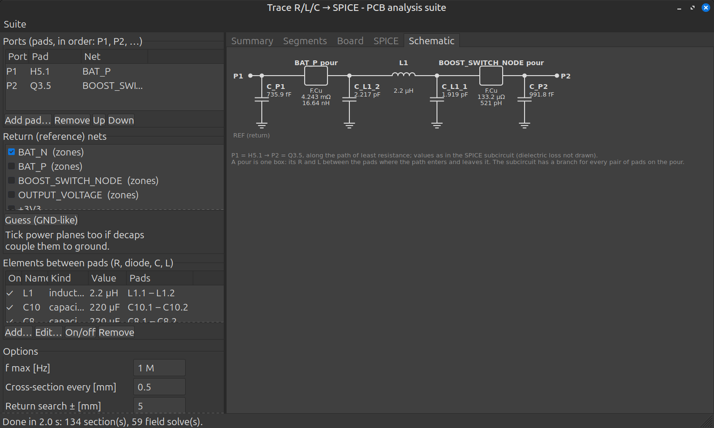
How it works
- Trace the copper from port P1: straight track pieces (arcs as short segments), T-junctions, touching or overlapping copper (a via ring on a pad edge, a track ending on a pad), vias as one node per layer with barrel pieces between them, pads as nodes. Nets are followed through the elements you place (a resistor, an inductor, a diode), never into a return net: a pad on GND is the reference node REF. With "Include stubs" branches to other pads stay in the model as open stubs (they ring); otherwise only the paths between the ports are kept.
- Cross-sections. Every sample mm along a track, the tool cuts the board perpendicular to it within a window and finds the return copper (zones and tracks of the return nets on every layer). A 2D finite-volume solve of that cross-section with the stackup's dielectrics gives the capacitance per length C′; the same solve in air gives L′ = 1/(c²C₀′). Z₀ = √(L′/C′), delay = √(L′C′) per length. Identical cross-sections are solved once.
- Resistance. R′ = ρ/(w·t) per track piece, then (optionally) scaled so the whole path's DC resistance matches the DC & Thermal solver's (which sees pads and current crowding). R′ at f max with skin effect is reported per segment.
- Vias and pads. A via is its barrel R; L from the nearest return via (a two-wire line) or the partial inductance of an isolated via; C from its anti-pad in the return planes. SMD pads add C′ × length, through-hole pads a via-like C.
- Pours. A zone of the net is meshed (down to 0.05 mm, up to 60 000 cells). Each cell link has the conductance of its copper and the inductance of copper over its return, μ₀h per square; each cell has C = ε₀εrA/h to the return. The mesh is reduced exactly onto the pads and vias that touch the pour (Kron reduction), giving an R + L branch between every pair of them and their share of the C. A port or element pad is one terminal over its whole area; other pads in the pour are tapped near their centre (otherwise a big through-hole pad would be a free shortcut across the pour).
- Ladder. Each chain of track between junctions is cut into equal sections no longer than λ/10 at f max: series R + L, C/2 to REF at each end. Optional dielectric loss G = ωC·tanδ as shunt resistors.
- Output.
.subckt NAME P1 P2 … REFwith plain R, L and C (a diode element becomes a source, a near-ideal diode and its R). Node and element names tell where they come from:L1_2is the node at pad L1.2,R_trk3_2section 2 of track chain 3,R_via12a via,R_pour1_A_Bthe pour branch between nodes A and B,C_<node>capacitance to REF.
Using it
- Ports: "Add pad…" or "From KiCad selection". P1 is the reference end; totals are from P1 to each other port. Every pad you want to drive, load or probe in SPICE must be a port; other pads stay inside the model.
- Return nets: GND-like nets are ticked. Also tick a power plane that is decoupled to ground at the frequencies of interest if signals reference it.
- Elements (optional): any two pads joined by R, a diode (Vf + R), C or L, ideal. A decap from the signal to a GND pad is a shunt C to REF.
- Options: f max (sets the section length and the εr used; enter the rise time and it suggests 0.35/tr), sample step and window, include stubs, calibrate R, dielectric loss.
- Extract, then read the tabs: Summary (per path R, L, C, Z₀ range, delay, warnings), Segments (per piece: layer, width, Z₀, εeff, L′, C′, R′, return found; vias, pads, pours, elements; CSV), Board (path coloured by Z₀, steps > 10 % marked, "Select path in KiCad"), SPICE (save / copy), Schematic (the ladder drawn along the path of least resistance).
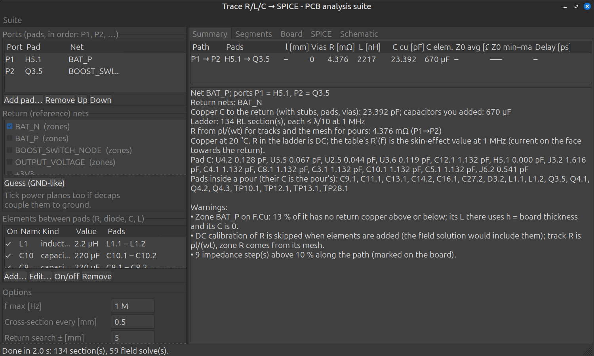
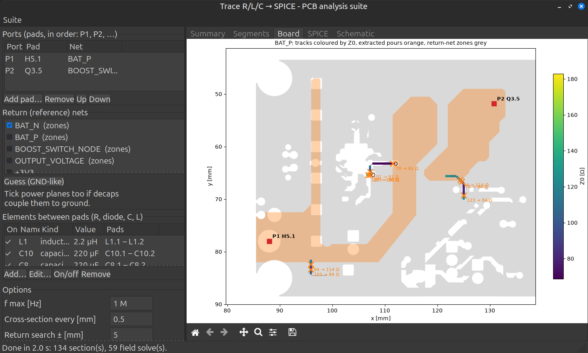
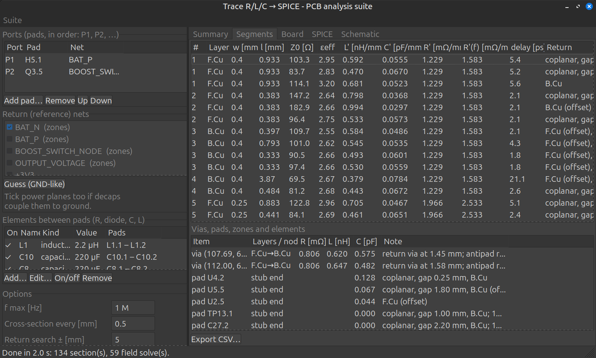
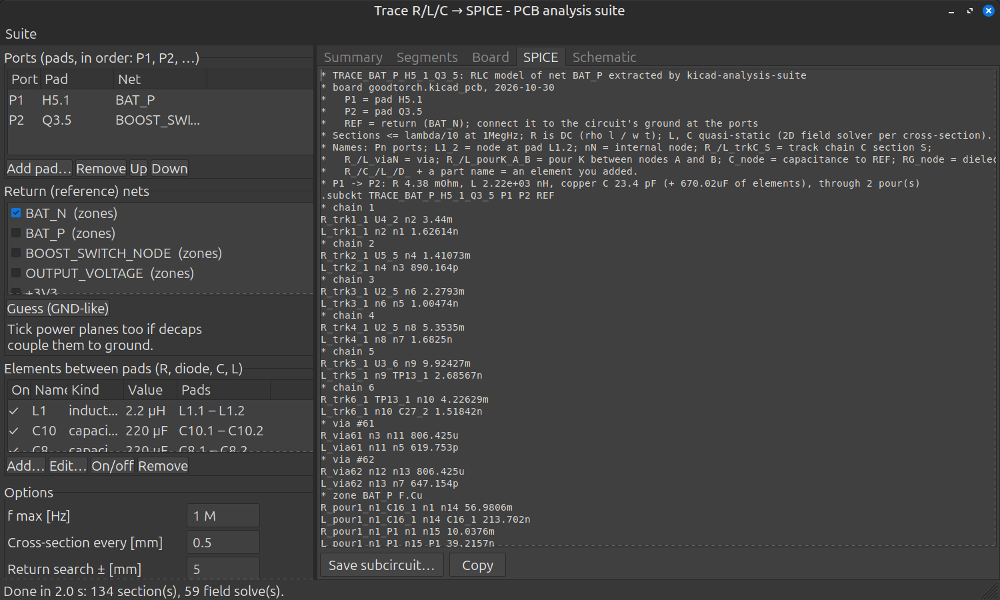
Line calculator
For one microstrip over a plane, the closed forms (Hammerstad–Jensen, zero thickness) give what the tool's field solve gives per cross-section, within about 2 %. The section count is how many π sections the ladder needs to stay valid up to f max.
Limits
- Quasi-static. No radiation, no dispersion: fine while the cross-section is much smaller than a wavelength (into the low GHz on ordinary boards).
- One net at a time. No coupling to neighbouring signals (crosstalk, mutual L and C) yet.
- R is DC in the netlist. Skin-effect loss is reported per segment at f max but not built into the time-domain model.
- The return is an ideal reference. Return copper is found and sets L and C, but its own resistance and inductance (ground bounce, return current detours around plane splits) are not in the netlist. Without return copper in the window, L is the trace's partial inductance and C ≈ 0 (marked red on the board view).
- Solder mask is not modelled (outer-layer Z₀ reads 1–3 % high).
- Elements are ideal R, C, L, diode: add ESR, ESL or a cap's own model in your SPICE deck if they matter.
- Pours are lumped: a pour larger than λ/10 at f max is warned about, with the frequency up to which its model holds.
Use cases
1. Crystal load capacitance: how much does the copper add?
Any MCU board with a 32.768 kHz or 8–25 MHz crystal.
- Situation
- The crystal's datasheet asks for CL = 9 pF. The usual formula CL = C1·C2/(C1 + C2) + Cstray needs Cstray, normally guessed as "2–5 pF". A wrong guess pulls the frequency by tens of ppm: an RTC that drifts a minute a month, or a USB/CAN clock out of tolerance.
- Why this tool
- It computes the copper capacitance of each crystal trace to GND from the real geometry and stackup, so the stray part of the formula is a number, not a guess.
- Steps
- Ports: P1 = the MCU's XTAL_IN pad, P2 = the crystal's pad on that net. Return: GND.
- Extract; read the copper C to the return in the Summary. Repeat for the XTAL_OUT net.
- Cstray per pin = copper C + the MCU pin capacitance (datasheet, typically 2–5 pF). Choose C1, C2 so that the series combination of (C1 + stray1) and (C2 + stray2) equals CL.
- What to look for
- Copper C per net (often 0.5–1.5 pF on a 4-layer board with GND under the crystal, more on two layers with a pour around it); whether the GND guard ring you drew adds more than you thought.
2. Ringing on a fast SPI clock with several loads
Embedded designer, SPI at 40 MHz from an MCU to a flash, an ADC and a display connector, plus a test point.
- Situation
- The display glitches when the flash is accessed. A scope on the test point shows overshoot. The MCU's edges are about 1 ns regardless of the 40 MHz clock, and the trace branches to three loads with a stub to the test point: classic reflections.
- Why this tool
- It turns the real branched routing, stubs included, into a netlist so the clock can be simulated in SPICE with the driver's output resistance and the receivers' input capacitance, and series termination values tried in minutes.
- Steps
- Ports: P1 = MCU SCK pad, P2/P3/P4 = the three receivers' SCK pads. Leave the test point as a stub ("Include stubs" on).
- f max: enter 1 ns as rise time → 350 MHz. Extract. Check the Board tab for Z₀ steps (a via or a neck-down to a connector).
- Save the subcircuit; in ngspice/LTspice drive P1 through 25–40 Ω (typical MCU output) from a 0–3.3 V, 1 ns edge; load P2–P4 with 5 pF each; tie REF to ground.
- Look at each receiver's waveform for overshoot, ringing through the threshold (a double clock), and the delay. Add a series resistor at the driver (an element in the tool, or in SPICE) and sweep 0–68 Ω.
- Caveat
- No crosstalk from neighbouring signals; a plain RLC model (no IBIS).
3. The input path of a converter for an inrush / input-filter simulation
Power designer, DC-DC converter fed from a battery or a plug-in supply, power routed in pours.
- Situation
- Hot-plugging the supply rings the input up to twice its voltage (a known problem with ceramic input caps and long leads), and the input filter's stability depends on the source impedance. The path from the input connector to the switch runs through pours, an inductor and capacitors.
- Why this tool
- Pours are not traces: the tool meshes them and reduces them to R and L between the pads on them, and places the inductor and caps as elements, giving a model of the whole input path for a SPICE hot-plug simulation.
- Steps
- Ports: P1 = the input connector's supply pad, P2 = the switch's drain pad. Return: the input ground net.
- Elements: the input inductor as an L element (its value), the input caps as C elements to the return pads.
- Extract. The Summary lists the copper R and L besides the inductor, and the pour branches. In SPICE add the source and cable (for example 0.1 Ω, 1 µH) and a switch closing at t = 0.
- What to look for
- The copper R, L and C next to what you add in SPICE. Typically the copper is a few mΩ and some tens of nH, so the cable dominates the inductance, while the copper and the caps' ESR set the damping the ring sees.
4. A 50 Ω RF feed with a layer change
IoT radio board, module output to an SMA connector, 2.4 GHz, 4-layer.
- Situation
- The feed changes from top to bottom through a via to reach the connector, and narrows at the module's pad. Is it still 50 Ω where it matters?
- Why this tool
- The Board tab colours each piece by its solved Z₀ (with the real return layer underneath, which changes after the via) and marks steps of more than 10 %. The via's L and C are listed.
- Steps
- Ports at the module RF pad and the SMA centre pin; return GND; f max 6 GHz. Extract. Read the Segments table's Z₀ and "return found" per piece; check the via. Adjust the bottom-layer width (the line calculator above gives the first guess), extract again. For a TDR view, drive the subcircuit with a 50 Ω step source in SPICE.
- Caveat
- At 2.4 GHz a long feed is near the quasi-static limit, and the connector's own model is not included. Use this to catch layout mistakes; final RF verification belongs to a full-wave tool or the VNA.
5. A gate-drive trace to a remote MOSFET
Discrete motor drive, gate driver IC 40 mm from the FETs.
- Situation
- You want to see in SPICE (with the FET's vendor model) whether the gate rings with the trace's inductance and the FET's Ciss, and size the gate resistor.
- Why this tool
- It gives the gate trace's R and L (with its return over the plane, or without one on a two-layer board) in a form you drop next to the FET model.
- Steps
- Ports: P1 driver output pad, P2 FET gate pad; return: the source net or GND; the gate resistor as an element or left for SPICE. Extract, export, and simulate driver step → subcircuit → FET model.
- Note
- For a complete power stage (gate loop coupled with the power loop, common-source inductance, Miller turn-on) use the Switching Loop tool, which solves both loops together.
6. An analog sensor line on a board without a ground plane
Low-cost 2-layer board, a thermistor or load-cell line 120 mm long next to a switching node.
- Situation
- The reading is noisy. Before re-spinning to 4 layers, how much inductance and capacitance does the line have, and does it see any return copper at all?
- Why this tool
- The Segments table states the return found per piece ("none in window" where the GND pour is far), and the board view marks those pieces red. That is exactly where the loop area, and the noise pickup, is.
- Steps
- Ports at the sensor connector and the ADC pin, return GND, f max 50 MHz. Extract; look at the red pieces; route a GND track alongside or pour under them; compare L.
Switching Loop
For a hard-switched power stage (buck, boost, half-bridge, motor phase, a converter IC with internal switches): the inductance of the hot loop and of each gate loop as laid out, where that inductance sits, how the switch node rings, the switching edges in time, a snubber designer, an EMI estimate, a before/after comparison of layout changes, and the switches' losses for the thermal map.
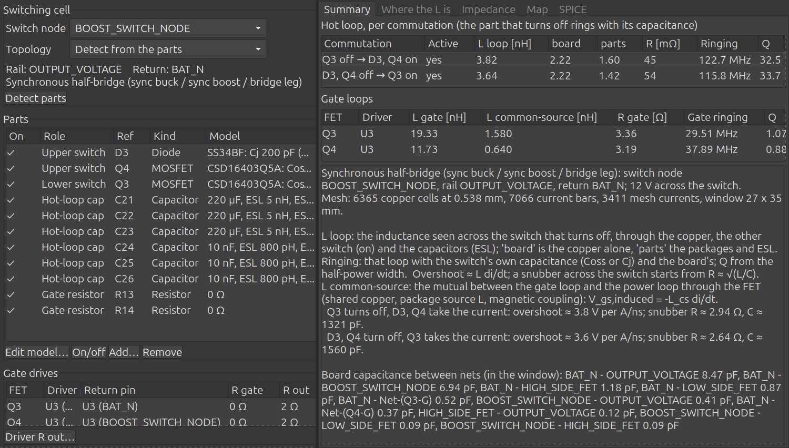
How it works
When a switch turns off, the current that flowed through it must move to the other switch within nanoseconds. It circulates in the hot loop: hot-loop capacitor → upper switch → switch node → lower switch → return → back to the capacitor. Its inductance L stores energy that rings with the off switch's capacitance (Coss) at f = 1/(2π√(LC)), overshoots by about L·di/dt, and radiates. Typical good SMD layouts have 0.5–2 nH; a loop of 5 nH at 5 A/ns overshoots by 25 V.
- The cell. An upper and a lower switching position between a rail (the supply side) and its return, the switch node between them, the hot-loop capacitors across rail and return, and a gate drive per FET (driver output pin → any series parts → gate, source → driver return pin). "Detect parts" finds all of it from the switch node: FETs and diodes on it, the caps between rail and return within 20 mm, 0 Ω rail links, the driver pins, converter ICs with internal switches.
- PEEC mesh. The copper of every net of the cell, ground included, in a window around the parts, is cut into cells (adaptive: a coarse first pass finds where the loop's energy sits, which is then meshed finely). Neighbouring cells of one net are joined by current bars; vias are vertical bars; narrow tracks are chains of bars along the track.
- Partial inductance. Every bar's self and mutual inductance with every other bar (exact integrals for close parallel tapes, filament formulas further away, Neumann's integral at an angle), R with skin effect, and capacitance between nets from the same cells. A mesh-current solve gives the copper's impedance between the parts' pins at several frequencies. Unlike a "ground is ideal" model, the return copper spreads as it really does.
- Circuits. The copper block plus the parts (FET packages with their pin inductances and capacitances, the capacitors' ESR and ESL, the drivers' resistance) gives, per commutation: the loop L across the switch turning off (copper alone and with the parts), its split by net, layer, vias and part ("Where the L is"), the ringing frequency and Q, the gate loops' L and the common-source inductance Lcs (the mutual between gate loop and power loop that subtracts Lcs·di/dt from the gate drive).
- Transient. One turn-off and one turn-on of the hard-switched switch, solved in time as one circuit (copper as coupled inductors at the ringing frequency, FETs with a square-law channel, voltage-dependent Cgd/Cds, body diode with reverse recovery; drivers as stepping sources; the inductor as a constant current). Built-in solver (trapezoidal + Newton), or ngspice (bundled with KiCad) for vendor SPICE models.
- Design aids. A lumped snubber designer, an EMI spectrum built from the simulated edges, a baseline to compare layout changes against, and the switches' losses sent to DC & Thermal.
Using it
- Switch node: pick it (nets joining an inductor and a switch are listed first) or select one of its pads in KiCad; "Detect parts". Check the cell diagram: it is drawn as the converter is (a buck input caps | switches | inductor → output, a boost the mirror image, input → inductor → switches | output caps), with the supply side at the top, the return at the bottom, and each switch's gate drive. Several cells per board (a 4-switch buck-boost, a full bridge, several converters): "New cell…", or the Checks button that offers the other leg.
- Topology: "Detect from the parts" names the cell (synchronous or diode-rectified buck or boost, a 4-switch buck-boost's input or output leg) in the diagram's title; set it by hand for a half-bridge or when the detection only guessed. It fixes which switch is hard-switched and what the rail is (a buck's input, a boost's output, a bridge's bus).
- Checks lists what is missing or doubtful, worst first, each with a fix button (✖ blocks the analysis, ⚠ makes it doubtful, e.g. generic part values).
- Models: "Edit model…" per part: RDS(on), Ciss/Coss/Crss at their VDS, Vth, gfs, Qrr, package inductances, rise/fall times; N/P channel; Kelvin source pads; a vendor SPICE file. "Save as…" stores a model by part number for every board.
- Gate drives: driver output/return pins, R out (source/sink), drive voltage, the series parts (resistors, beads, any pad-to-pad element).
- Operating point: "From the converter's Vin, Vout, Iout…" fills the voltage across the switches, the inductor current, its ripple and the duty cycle from the topology's formulas (inductance read from the board; discontinuous mode handled for diode rectifiers). Or enter them by hand, with the switching frequency and, for a half-bridge, the current's direction. Tick "Simulate the switching edges".
- Analyse. Tabs: Summary (a plain-language "What it means", per-commutation table, gate loops), Switching (edge table and waveforms, losses), Snubber, EMI, Where the L is, Impedance, Map (current and inductance density per layer), SPICE (coupled-inductor model of the copper), Compare.
- Iterate: "Keep these results as the baseline", change the layout in KiCad, "Save in KiCad, reload and analyse", read the Compare tab.
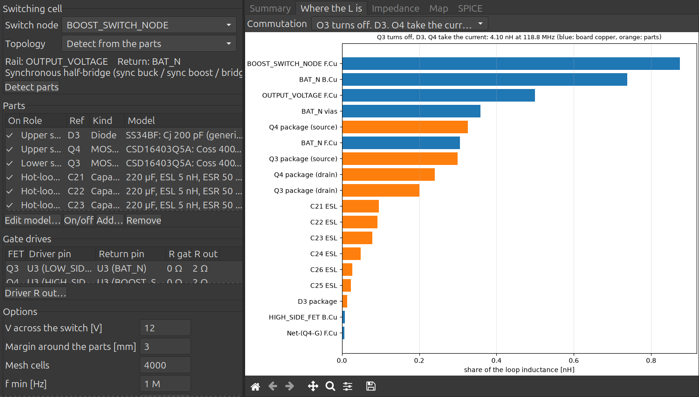
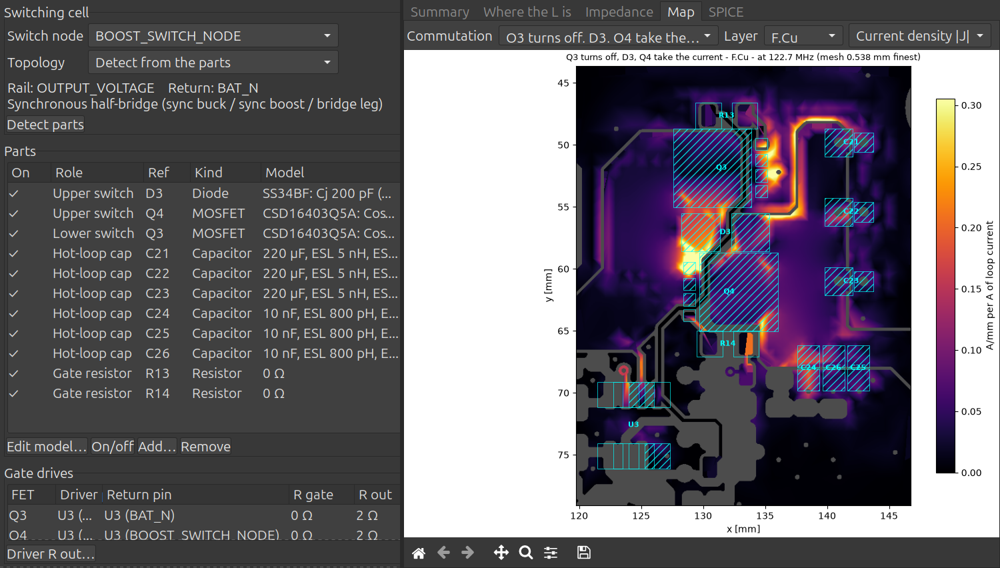
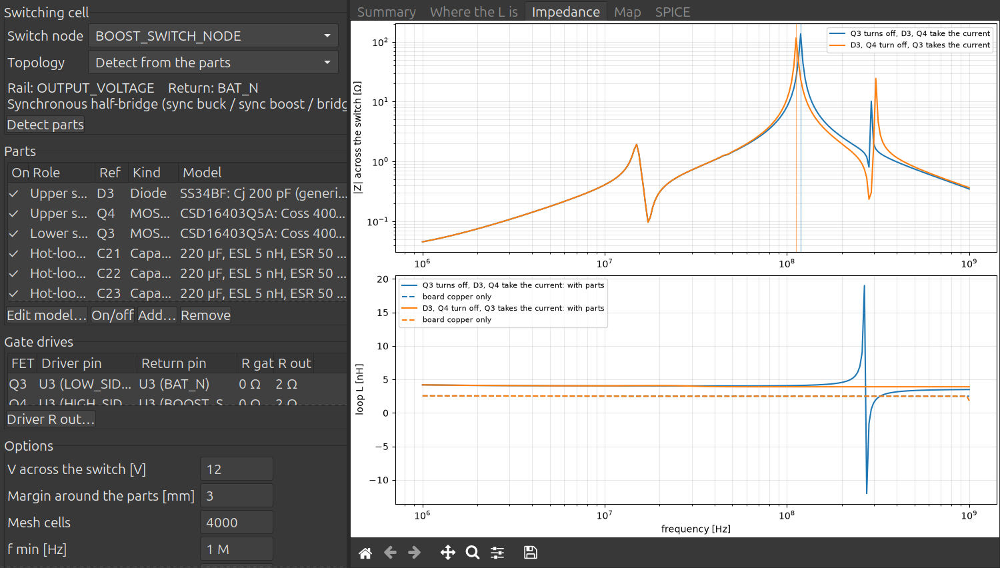
Ringing & snubber explorer
The tool's snubber designer uses this lumped model of a hard turn-off: the voltage has risen to the supply, then the switch current falls at di/dt; the loop L and R ring with the switch capacitance Cpar; an RC snubber (Rs, Cs, its ESL) across the switch damps it. Same equations, same integrator.
Things to try: halve L and see both the overshoot and the ring frequency change (the layout fix); raise Rs far above √(L/C) (the snubber stops damping) or far below (Cs just adds to Cpar: lower peak, longer ring); make Cs large and watch the loss CsV²fsw grow.
Spectrum explorer
The EMI tab builds one switching period from the two simulated edges and takes its Fourier series. A trapezoid with duty d and rise time tr has an envelope that is flat up to 1/(π·d·T), falls 20 dB/decade up to 1/(π·tr), then 40 dB/decade. Ringing adds a bump at its frequency that rises above that envelope: often the line that fails the EMI scan.
Limits
- Topologies. Buck and boost (synchronous or with a diode), half-bridge legs, and 4-switch buck-boost converters as two legs. SEPIC, Ćuk, inverting buck-boost and isolated converters are not covered: their hot loops close through a coupling capacitor or a transformer.
- Quasi-static. Fine while the loop is much smaller than a wavelength (30 mm is λ/10 at 1 GHz).
- Window. Copper outside the window around the parts, and eddy currents in unrelated nets' copper, are not included.
- Transient copper at one frequency. The time-domain copper model is R and L at the ringing frequency; skin-effect damping is exact there only.
- Device models are datasheet level (square-law channel, C(V) ∝ 1/√V, stored-charge recovery) unless you give a vendor SPICE model. 25 °C: Vth and RDS(on) change when hot.
- An IC's internal switch is a conductance ramped over its rise/fall time (5 ns if not given) with Coss; no gate loop.
- Timing comes from the gate drive; datasheet delays are for reference. Dead time is not simulated (the edges are separate).
- Snubber is placed ideally at the switch's pads, with its ESL standing for its own copper; it is not a footprint.
- EMI: hot-loop radiation and common-mode conduction only; no cable radiation, no differential-mode conducted noise (it depends on the input filter), peak sum instead of quasi-peak/average detectors. Use it to compare, not to predict a pass.
- Losses exclude dead-time (body diode) conduction and gate-drive loss.
- Memory: the dense inductance matrix grows with the square of the cells (about 2 GB at 4000 cells); the tool lowers the cell count to fit in 40 % of free memory.
Use cases
1. Reviewing a synchronous buck layout before ordering boards
Power designer, 24 V → 5 V, 8 A, 400 kHz, discrete FETs in 5×6 mm packages, half-bridge driver, 4-layer.
- Situation
- Two placements are on the table: input caps on the same side as the FETs (short, but the layout is crowded), or on the bottom directly under them with vias. The datasheet application note says "minimise the hot loop" but not by how much each option does it.
- Why this tool
- It gives the loop inductance of each layout, splits it by contributor (copper per layer, vias, cap ESL, FET packages), and predicts the overshoot at the real di/dt, so the decision is a number. The baseline makes the comparison direct.
- Steps
- Pick the switch node, "Detect parts". Enter the FETs' datasheet values ("Edit model…"; "Save as…" so the next board gets them too) and the driver's R out.
- Operating point: "From the converter…" with 24 V in, 5 V out, 8 A, 400 kHz and the 4.1 µH inductor read from the board gives 24 V across the switches, 8 A, ripple 2.4 A, duty 0.21. Tick "Simulate the switching edges". Analyse.
- Read "What it means": the loop L with its rating, the ring, the overshoot against 24 V, the three biggest contributors you can change, with a tip each.
- Compare tab: "Keep these results as the baseline". Move the caps in KiCad; "Save in KiCad, reload and analyse".
- Compare tab: loop L, ringing, V peak and switching loss, before and after, with the edge waveforms overlaid.
- What to look for
- Loop L below 2 nH for this class; overshoot leaving 20 % margin on the FETs' 40 V rating; whether vias dominate "Where the L is" (then more vias in parallel at the cap and FET pads); the upper FET's gate loop ringing (raise its gate resistor to the damping value given).
2. Switch-node ringing fails the radiated EMI scan
Product team, pre-compliance scan failed by 8 dB at 140 MHz, CISPR 32 class B.
- Situation
- The spike sits at the switch node's ringing frequency (seen on a scope with a short ground spring). The options are a snubber (loss), slower gate drive (loss and heat), or a layout change (time). Which one, and how big?
- Why this tool
- It reproduces the ring from the layout, designs a snubber against the switch's own capacitance, checks it on the board, and shows the change in the EMI estimate and in the losses, side by side.
- Steps
- Analyse with the edges simulated. Confirm the ringing frequency matches the measured spike (within 10–20 %; if not, check the FET's Coss and the caps' ESL).
- EMI tab: choose class B, 10 m (or 3 m as tested). "What it means" names the worst margin and whether it is the ring.
- Compare tab: keep as baseline.
- Snubber tab: "Across" = the switch that rings worst (a buck's lower FET rings at the upper's turn-on); "Suggest values"; look at the Rs sweep and the loss; round to real parts (e.g. 2.2 Ω, 1 nF C0G); "Put in the cell"; Analyse.
- Compare: ring Q, V peak, radiated margin, switching loss + snubber loss. Try instead a higher gate resistor (Edit drive…) and compare again.
- Caveat
- The tool's EMI number is not the chamber's: use the change in dB between variants. A ring fixed on the board can still radiate through a cable if the cable is the antenna; the conducted common-mode estimate (with the switch node's capacitance to the chassis) hints at that path.
3. Will the off FET turn itself on? A 48 V motor half-bridge
Motor-drive designer, 48 V bus, 30 A phase current, FETs with Vth 2.5 V (lower when hot).
- Situation
- At fast turn-on of one FET, the switch node slews at 10–20 V/ns. That dv/dt pushes current through the other FET's Cgd into its gate; if its gate rises above Vth both conduct (shoot-through) for a few ns: heat, current spikes, EMI. The common-source inductance makes it worse.
- Why this tool
- The transient simulates the gate loops and the power loop as one circuit with the real copper, so the held-off gate's bounce is computed, not guessed. Lcs is reported per FET.
- Steps
- Enter both FETs' models (vendor SPICE model if you have it: the edges then run in ngspice), the driver's sink resistance (R out off), drive voltage, any gate-source capacitor as a part.
- Topology: Half-bridge. "From the converter…": bus 48 V, mean phase voltage, phase current +30 A (out of the switch node) or −30 A (into it): the sign decides which FET is hard-switched. Analyse.
- Switching tab: "Other gate peak" against its Vth; "What it means" marks ✖ shoot-through or ⚠ close (and reminds that Vth falls when hot).
- Try: a Kelvin source connection ("Edit model…" Kelvin pads), lower sink resistance, a gate-source capacitor, a slower turn-on resistor; compare against the baseline.
- Caveat
- Negative gate drive is modelled as the drive voltage you give; the driver's own internal dynamics (propagation delay, UVLO) are not.
4. A synchronous boost IC: is the output capacitor in the right place?
Battery product, 1-cell Li-ion → 5 V boost IC with internal switches, 2 A.
- Situation
- In a boost the hot loop is on the output side: SW → internal high-side switch → VOUT pin → output cap → GND → low-side switch. The schematic puts a 0 Ω option resistor between the VOUT pin and the output net. Is the cap close enough, and does the option resistor hurt?
- Why this tool
- Detection follows the IC's pins (the hot-loop rail is the IC power net that is not the inductor's far end), follows 0 Ω links to the caps behind them, and the breakdown shows how much of the loop is the link's copper.
- Steps
- Pick the SW net; "Detect parts": the IC becomes two internal switches; the caps behind the 0 Ω link are found and the link shown as a "Rail link".
- Edit the internal switches: RDS(on), rise/fall time from the datasheet; Coss if given (else left out).
- Analyse. "Where the L is": the share of the link's copper and of each cap's ESL.
- Try a small 100 nF 0402 directly at the VOUT and GND pins (Add… → hot-loop cap after placing it in KiCad); compare.
- What to look for
- A loop of several nH where a well-placed cap would give 1–2 nH, with a large share in the copper between the VOUT pin and the link: the cap belongs at the pins, and the link's copper is the thing to shorten.
5. Choosing between two MOSFETs
Cost-down of an existing design: replace a FET with a cheaper one in the same package.
- Situation
- The cheaper part has lower Coss but more Qrr and a different Vth. Switching loss, overshoot and gate margin all move.
- Why this tool
- The same board, the same edges, two device models: the Compare tab shows the difference in every number that matters.
- Steps
- Analyse with the current FET; keep as baseline; "Edit model…" → the new part's datasheet values or its vendor SPICE model (file, subcircuit, pin order); Analyse; Compare: Eon, Eoff, switching loss, peak, recovery current, other gate peak.
6. From switching losses to board temperature
Compact power supply, no heatsink: the FETs are cooled by copper.
- Situation
- Is the copper around the FETs enough for their losses at full load in a 50 °C enclosure?
- Why this tool
- Switching Loop computes each switch's switching loss (from the simulated edges) and conduction loss (Irms²RDS(on) at the duty cycle) and puts them on the parts' pads in DC & Thermal.
- Steps
- Analyse with the edges simulated and the real duty cycle; Switching tab: "Send losses to DC & Thermal…" (it lists the watts per part); open DC & Thermal; set the ambient; run with thermal on; read the temperature under the FETs (see DC use case 7).
Matching & Tolerance
Build an RF matching network from real parts and see whether it still matches when every part sits anywhere in its tolerance: corners, Monte Carlo, a worst-case search, yield per band, which part matters most, and the BOM.
How it works
- Network. A ladder of series and shunt slots between a source impedance ZS and a load ZL.
Each slot holds an L, C or R (an ideal value or a library part with its parasitics), a transmission line (ideal Z₀/εeff
or a microstrip from the board's stackup), an open or shorted stub, or a two-port from a Touchstone
.s2pfile. The load can be R + jX, an RLC model or a measured.s1p(an antenna's S11 from a VNA). - Real parts. L: tolerance, DCR, Q at a frequency, SRF (series R(f) = DCR + k√f fitted to Q, parallel C from the SRF). C: tolerance (± %, ± pF or the codes A/B/C/D = 0.05/0.1/0.25/0.5 pF), ESR or Q, ESL or SRF, dielectric (C0G, X7R…) with temperature and DC-bias behaviour. R: tolerance, series L, parallel C.
- Cascade. Each slot is an ABCD matrix; the chain is multiplied for every frequency and every sample at once (arrays of samples × frequencies), so 10 000 Monte Carlo samples take about a second. Γin is the reflection against ZS*, and the transducer gain gives the insertion loss including the parts' loss.
- Analyses. Corners (every variable at both limits; up to 14 variables), Monte Carlo (uniform, or Gaussian with 3σ = tolerance), worst-case search (a bounded optimiser per band and metric, started from the worst corners and samples; a resonant match can be worst inside the tolerance box, which corners miss), sensitivity (a one-at-a-time tornado chart and each part's share of the variance), and an optional temperature sweep.
- Specs per band: minimum return loss, maximum insertion loss, maximum VSWR. Yield = the share of samples meeting all of them across the band.
Using it
- Set the source and load (port boxes in the schematic), the sweep and one or more bands with their specs.
- Add parts from the palette (they appear at the ▼ marker), pick a library part or type values (
4n7,1.2p), set tolerances. The nominal response redraws as you edit. - "Width for Z0…" and "Use board stackup" for microstrip slots.
- Run the analysis; read the plots: Smith chart with the Monte Carlo cloud, S11 / S21 / VSWR with min–max and 5–95 % bands, histograms with yield per band, sensitivity, worst-case table and BOM (CSV).
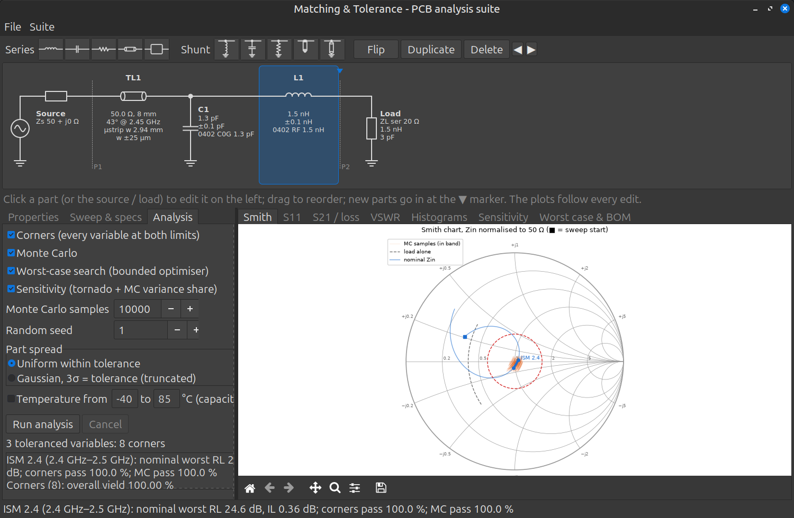
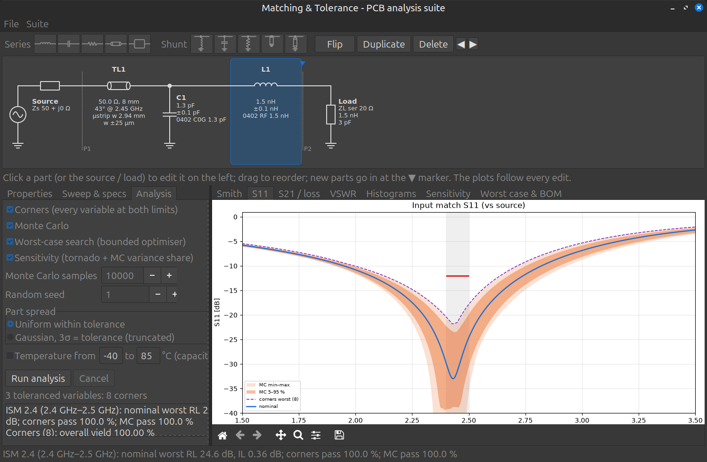
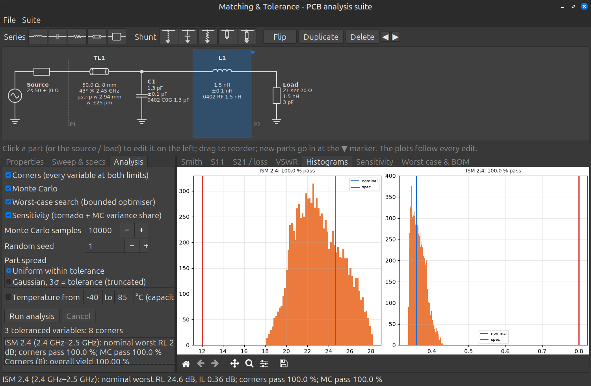
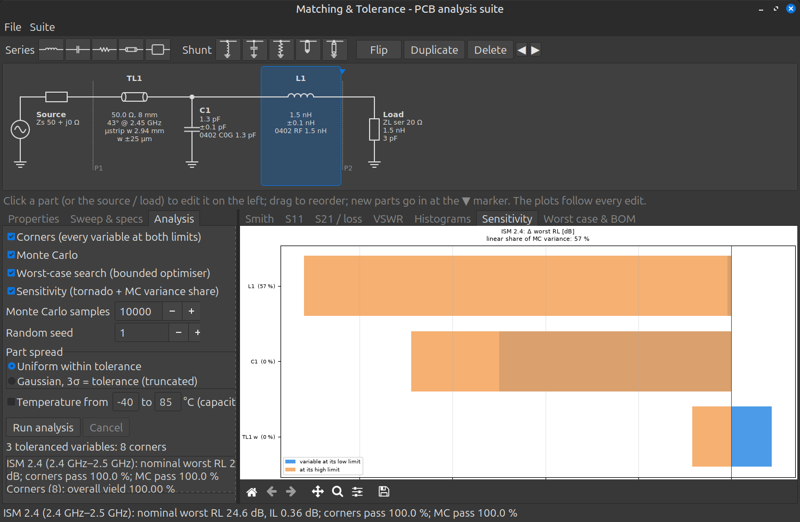
Tolerance explorer
A two-part L-match (shunt C at the 50 Ω side, series L toward the load) designed for the centre of the 2.4 GHz band, then 4000 random builds with the tolerances you choose. The histogram is the worst return loss across 2.400–2.4835 GHz per build: the same kind of result as the tool's histogram tab.
With these settings (a 6 Ω load, a 15 dB spec, a ±0.25 pF capacitor) about 2 % of builds fail, all from the tail of the distribution, although the nominal design reaches 27 dB. Switch the capacitor to code B and the yield is 100 %. At 2.4 GHz a 3.5 pF capacitor with ±0.25 pF is a ±7 % part, and a lower load resistance (a higher-Q match) makes it matter more: try 5 Ω, or a ±10 % load spread. A real network has more parts, their parasitics and a measured load, which is what the tool handles.
Limits
- A ladder only (series/shunt slots); a general netlist and import from the KiCad schematic are not there yet.
- No coupling between parts, no pad or via parasitics unless you add them as elements (the Trace tool gives their values).
- Microstrip is quasi-static (no dispersion, no thickness correction).
- An
.s2ppart is fixed (no tolerance). - Return loss, insertion loss, VSWR: no noise figure, no non-linear (power) effects.
- Not yet: automatic synthesis of L/π/T networks, snapping to E-series, design centring.
Use cases
1. A 2.4 GHz chip antenna: which capacitor tolerance code to buy?
IoT device, BLE module, chip antenna on a small ground plane, π-match footprint with three 0402 parts.
- Situation
- A VNA measurement of the antenna on the real board (with the enclosure) gave its S11. The tuned values are 1.8 nH series and 1.2 pF / 0.8 pF shunt. Production must reach at least 10 dB return loss across 2.400–2.4835 GHz. The ±0.05 pF (A) capacitors cost more than ±0.25 pF (C): is A needed, or does B do?
- Why this tool
- It runs the measured antenna (
.s1p) as the load with the real parts' tolerances, parasitics (0402 ESL and Q) and either distribution, and gives the yield per tolerance code, and the sensitivity shows which of the three parts needs the tight tolerance. - Steps
- Load: the
.s1pfile. Source: 50 Ω. Band 2.400–2.4835 GHz, RL ≥ 10 dB. - Add shunt C, series L, shunt C from the library (0402 parts: ESL and Q included), with the tuned values.
- Monte Carlo with code C on both capacitors: read the yield. Repeat with B, then A only on the part the sensitivity chart ranks first.
- Run the worst-case search to see the worst build inside the tolerance box; export the BOM.
- Load: the
- What to look for
- Yield per option; the tornado chart (often one shunt capacitor dominates); the Smith chart cloud against the 10 dB circle.
- Caveat
- The antenna's own production spread (ground plane, plastics, hand effect) is not in the
.s1p; add margin, or model the load as RLC with a tolerance.
2. An NFC antenna that detunes in the cold
Access-control reader, 13.56 MHz loop antenna, series and parallel tuning capacitors.
- Situation
- Readers in an unheated entrance lose read range in winter. The tuning capacitors are X7R to save cost. An NFC antenna has a Q of 20–30, so 2 % of capacitance shifts it noticeably.
- Why this tool
- The temperature sweep drifts capacitors by their dielectric (X7R vs C0G), so the match at −20 °C and +60 °C can be compared with the tolerance spread at room temperature.
- Steps
- Load: the antenna as series R + L with its parallel C (measured, or from the design tool). Source: the reader IC's output impedance (e.g. 50 Ω after its EMC filter). Add the tuning C's with their dielectric. Run with the temperature sweep; compare X7R and C0G for yield at 13.56 MHz ± the bandwidth.
- Caveat
- The card's coupling (load modulation) is not modelled: this is the unloaded antenna match.
3. A sub-GHz radio: reference design values on your own board
LoRa/Sigfox node at 868 MHz, transceiver's reference matching network copied into a different layout.
- Situation
- The reference design assumes its own stackup and trace lengths. Your feed is 12 mm long on a 0.2 mm dielectric. Does the network still meet its insertion-loss target (the transmit power budget) and its harmonic filtering?
- Why this tool
- Microstrip slots take the board's stackup, so the real feed is part of the network, and the insertion loss per band includes the parts' Q.
- Steps
- Source: the transceiver's optimal load impedance from its datasheet; load: 50 Ω (the antenna connector). Add the reference network parts and a microstrip slot for your feed ("Use board stackup", your width). Band: 863–870 MHz with RL ≥ 12 dB and IL ≤ 0.7 dB. Sweep up to 3 GHz and read the attenuation at the 2nd and 3rd harmonics (1.73 and 2.60 GHz) off the S21 plot with its tolerance band (the specs cover return loss, insertion loss and VSWR, not a minimum rejection). Monte Carlo; adjust; BOM.
Stackup, library and other panels
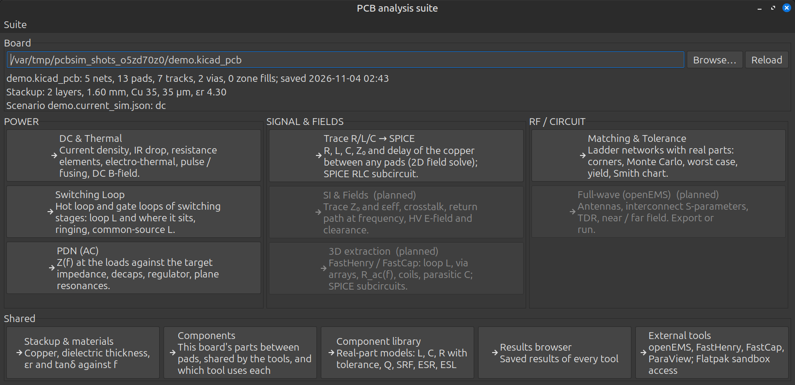
- Stackup & materials. Copper and dielectric thickness per layer from the board, with overrides (finished
outer copper after plating is often 45–60 µm on "1 oz" boards: it changes resistances by 30 %). εr and tanδ
per dielectric, editable at a reference frequency, with the wideband Djordjevic–Sarkar model for their frequency
dependence (εr falls slowly with f, tanδ nearly flat).
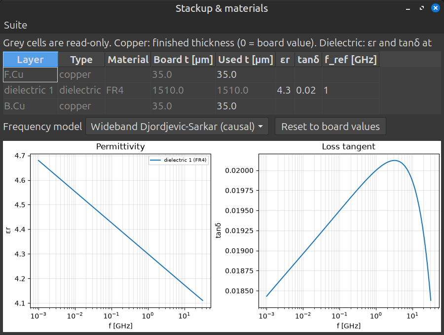
- Component library. Built-in generic parts plus your own (
~/.config/pcb_current_sim/library.json): tolerance and parasitics, DC-bias derating for ceramics, a |Z| and Q plot at nominal and at the limits. Used by Matching and by Switching Loop's capacitors.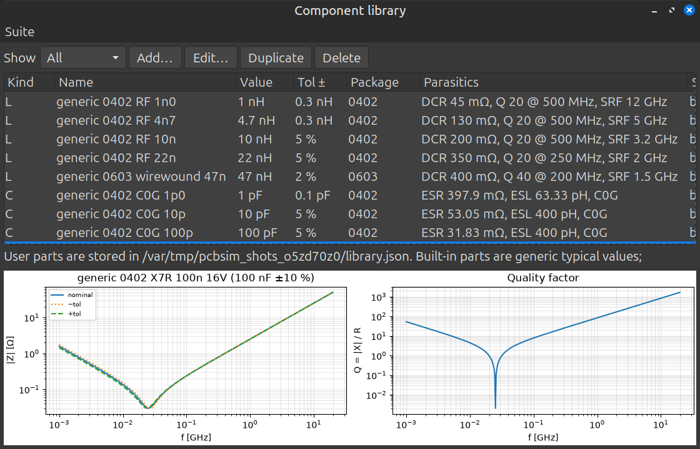
- Results browser. Saved DC results (
.npz+.json) under the board folder, to reopen. - External tools. Detects openEMS, FastHenry, FastCap and ParaView. From the KiCad Flatpak, host programs can only
be started after
flatpak override --user --talk-name=org.freedesktop.Flatpak org.kicad.KiCad.
Which tool for which question
| Question | Tool | Main output |
|---|---|---|
| Will this trace / plane / via get too hot? How much voltage does it lose? | DC & Thermal | T map, ΔV per row, loss ranking |
| Does the copper survive a short-circuit pulse of X A for Y ms? | DC & Thermal (pulse) | T against time, time to melt |
| Is the sense resistor's Kelvin tap in the right place? | DC & Thermal | V map, ΔV between points |
| What field does this current put on a nearby sensor? | DC & Thermal (magnetic) | B maps |
| What is this trace as a SPICE model? Its Z₀ and delay? Its C to ground? | Trace R/L/C → SPICE | .subckt, segment table |
| How big is my converter's hot loop, and where is the inductance? | Switching Loop | L loop, breakdown, map |
| How much does the switch node overshoot and ring? Do I need a snubber? | Switching Loop | edges, snubber tab |
| Will the off FET turn on by itself (Miller turn-on)? | Switching Loop | other gate peak vs Vth |
| Which layout variant is better for EMI? | Switching Loop (EMI + Compare) | margin change in dB |
| Will my regulator overheat? Is it in dropout at the far end of the input? | DC & Thermal | regulator P, Tj, headroom |
| Does my matching network survive part tolerances? Which code to buy? | Matching & Tolerance | yield, worst case, sensitivity |
| Does my rail stay within its ripple budget under load steps? | PDN (planned) | Z(f) against target |
Validation and accuracy
Every solver is checked against closed-form results in the test suite (python3 -m pytest tests, 127 tests).
| Tool | Check | Agreement |
|---|---|---|
| DC & Thermal | Straight, arc and via resistance against analytic | within 1–2 % at 8 cells per width |
| 45° tracks against axis-aligned (cut-cell faces) | within 1–2 % | |
| B above an infinite strip | within 1 % | |
| Hairpin loop inductance against Grover | within 4 % | |
| Adiabatic pulse against Onderdonk (fusing time) | 10.03 ms vs 10 ms | |
| Thermal cell 0.3 mm against 0.18 mm on a dense multi-layer board | Tmax 2 % of the rise lower | |
| Trace R/L/C | Microstrip / stripline field solve against Hammerstad–Jensen / Wheeler | within 1.5 % / 1.6 % |
| Pour over a plane: C and L against εA/h and μ₀hl/W; R against DC solver | within 1 %; within 2 % | |
| Subcircuit delay in ngspice against the extracted delay | matches | |
| Switching Loop | Wide strip over a plane against Hammerstad; plane pair against image theory | 0.4 %; 0.5 % |
| Copper R against the DC solver | within 3 % | |
| Via pair, diagonal narrow track against hand formulas | within 5 % | |
| 1 mm trace over a 1.5 mm plane against the 2D field solve | 3–6 % high (few bars across a narrow trace) | |
| Transient solver against an analytic RLC step; ring f and Q against the frequency analysis | < 1 %; f within a few %, Q within 30 % | |
| Built-in transient against ngspice with the same equations | peaks within 1 %, energies within 10 % | |
| Matching | 50 → 10 Ω L-match, quarter-wave transformer, stubs, S2P = L | |Γ| < 1e-9 at f₀; exact |
| 50 Ω microstrip on FR4 (h 1.6 mm, εr 4.4) | 3.0 mm width, as tables |
Command line
# DC & Thermal: rows SRC>SNK:AMPS[:NAME]; pads joined with +
python3 -m pcb_current_sim board.kicad_pcb --row "J1.2>J2.2:3:signal" --row "J2.1>J1.1:3:return" \
--out results --formats png,pdf,html,csv,npz [--no-thermal] [--pitch 0.05] \
[--thickness F.Cu=48um] [--ambient 25] [--h-conv 12 | --emissivity 0.9]
# voltage sources and loads: --vsource "PLUS>MINUS:VOLTS[:NAME]" --load "PLUS>MINUS:AMPS[:NAME]"
# elements: --element "Q1.3-Q1.2=20m:Q1:0.35" (R, name, watts) --element "D1.2-D1.1=0.45V+20m:D1" (diode)
# off-board element: suffix :ext pulse: --pulse SCALE:MS[:steady]
# others: --no-auto-resistors --no-crop --no-magnetic --b-height MM --formats html3d,vtk
# Trace R/L/C -> SPICE
python3 -m pcb_current_sim.extract board.kicad_pcb U1.12 J3.1 [more pads] --return GND --fmax 1G -o trace.lib
# Standalone GUI (no KiCad needed)
python3 -m pcb_current_sim.wxgui board.kicad_pcb --homeFiles and saving
| File | What |
|---|---|
<board>.current_sim.json | Scenario: one section per tool (stackup overrides, DC rows/elements/settings, extract ports, loop cells and baselines, matching network). Next to the board; safe to commit. |
results/*.npz + .json | Saved DC results, reopened by the viewer and the results browser. |
~/.config/pcb_current_sim/library.json | Your component library parts. |
switch_models.json (next to the library) | Switching Loop device models saved by part number. |
| Exports | PNG/SVG/PDF views and reports, CSV tables, interactive HTML, ParaView folders (board.vtm, pulse.pvd), SPICE .lib, Touchstone inputs. |
Troubleshooting
The toolbar buttons do not appear
- Preferences → Plugins → Enable KiCad API must be ticked; restart the PCB editor.
- The plugin must be in KiCad's
plugins/folder (whereinstall.shputs it), notscripting/plugins/(old SWIG plugins only). - The first start installs Python packages: give it network access and a minute. If the plugin's environment exists but has only pip, install the requirements into it by hand (see DEVELOPMENT.md).
A button does nothing
The plugin failed to start; run the action script by hand with the plugin's Python to see the error. With
install.sh --link, update to a version whose _bootstrap.py handles linked installs.
Results do not reflect my last edit
The tools read the saved file: save, refill zones, then run (or use the window's save/refill buttons).
"Thermal runaway"
The copper would exceed its melting point at this current: the result is real for the inputs. Check the current, the copper thickness and the ambient.
Switching Loop lowered the mesh cells
The dense matrices must fit in 40 % of free memory; close other programs or accept the coarser mesh (adaptive meshing keeps most of the accuracy).
ngspice not available
Vendor SPICE models need KiCad's bundled libngspice or an ngspice program; otherwise use the built-in simulator with datasheet values.
Planned tools
- PDN (AC power integrity): Z(f) of a rail at its loads against a target impedance, decoupling capacitor table with mounting inductance, VRM model, plane resonances, what-if per capacitor.
- SI & Fields: 2D cross-section solver for coupled lines and crosstalk, return-current paths, HV field and clearance.
- 3D extraction (FastHenry / FastCap) and full-wave (openEMS) export.
- Batch command line: rerun the setups saved for a board after every change (from a Makefile, on save, from a git hook or in CI), with pass / fail checks (temperature, voltage at a load, loop inductance, matching yield…) and a report comparing with the previous run.
Glossary
-
Coss, Crss, CissA MOSFET's output, reverse-transfer (Miller) and input capacitance from its datasheet.
CommutationThe moment the current moves from one switch to the other.
Common-source inductanceInductance shared by the gate loop and the power loop; the power current's di/dt across it fights the gate drive.
Cut-cellA grid where each link conducts through the actual copper part of the cell face, so tracks at any angle are handled.
Hot loopThe high-di/dt loop of a converter: hot-loop capacitor, both switches, return.
Kelvin connectionA separate sense or drive connection that carries no load current.
Kron reductionExact elimination of internal nodes of a network, keeping only the terminals.
LISNLine impedance stabilisation network: the 50 Ω measurement network in conducted EMI tests.
PEECPartial-element equivalent circuit: the copper as resistors and partial (self and mutual) inductances.
PortA pad that becomes a terminal of an extracted model, measured against the reference.
QQuality factor: how many cycles a ring lasts (about Q/π periods to fall to 1/e).
Return loss−20·log₁₀|Γ|: how much of the power is reflected; 10 dB = 10 % reflected.
SnubberAn R-C across a switch that damps its ringing.
Z₀Characteristic impedance of a transmission line.
PCB Analysis Suite · GPL-3.0 · github.com/ShrinathN/kicad-analysis-suite · This page is self-contained: no network access is needed to read it.